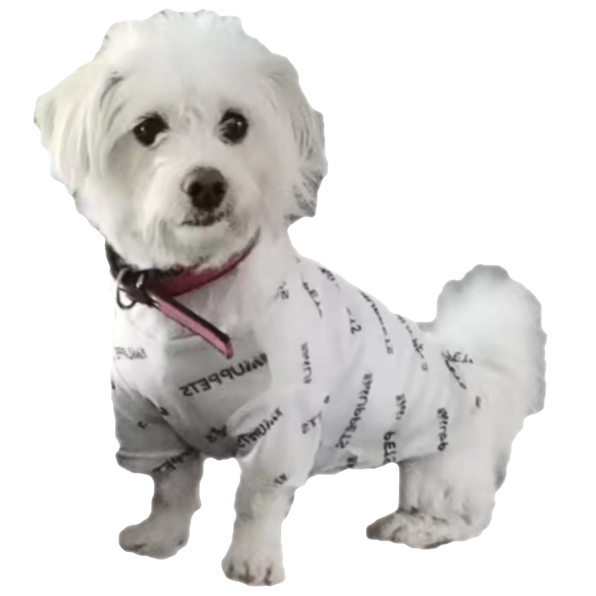

I am a second-year master student majoring in Computer Science at National University of Singapore (NUS) advised by Prof David Hsu.
I work at the intersection of robotics and machine learning, with the goal of enabling robots to work intellectually and seamlessly in the real world. Currently, I am working on open scene graphs for open-world object goal navigation at the NUS Adacomp.
This work examines, experimentally and theoretically, one representation that enables visual navigation policies solely trained in the Habitat simulator to generalize to real-world scenes, both indoor and outdoors.
A framework that enables an agent to put misplaced objects back in place with partial map information by exploiting commonsense knowledge in large language models (LLMs).
Formulated corporate carbon footprint estimation problem and proposed the first Methodology to estimate the direct and indirect carbon emissions of factories in real time
Developed a deep end-to-end super resolution perception, recovered nearly 89% of high-frequency information lost in low-frequency information for equipment load identification
at 1/10th of the original data volume, communication, and storage requirements.
Developed a self-driving agent in the Duckietown simulation with classical planning, computer vision, and imitation learning techniques. Placed among the top-scored project in the module.
Teaching Assistant
CS5446/4246 AI Planning and Decision Making, Fall 2023, NUS
DBA5106 Foundations of Business Analytics, Fall 2023, NUS
CS5242 Neural Networks and Deep Learning, Spring 2023, NUS
DBA5106 Foundations of Business Analytics, Fall 2022, NUS
CSC4020 Fundamentals of Machine Learning, Spring 2022, CUHKSZ
ERG3010 Data and Knowledge Management, Fall 2021, CUHKSZ
Awards and Honors
2021: Dean's List, CUHKSZ School of Data Science
2021: Academic Performance Scholarship, CUHKSZ
2020: Dean's List, CUHKSZ School of Data Science
2020: Academic Performance Scholarship, CUHKSZ
2020: Undergraduate Research Award, CUHKSZ
Thank you for visiting my pawrent's website 🐾 🐾 🐾 
{kind=link}